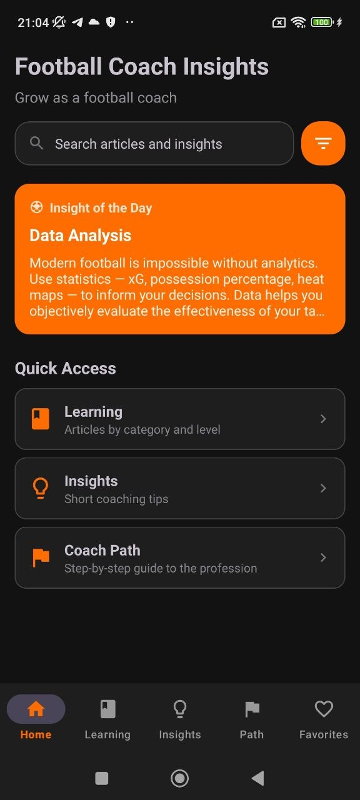
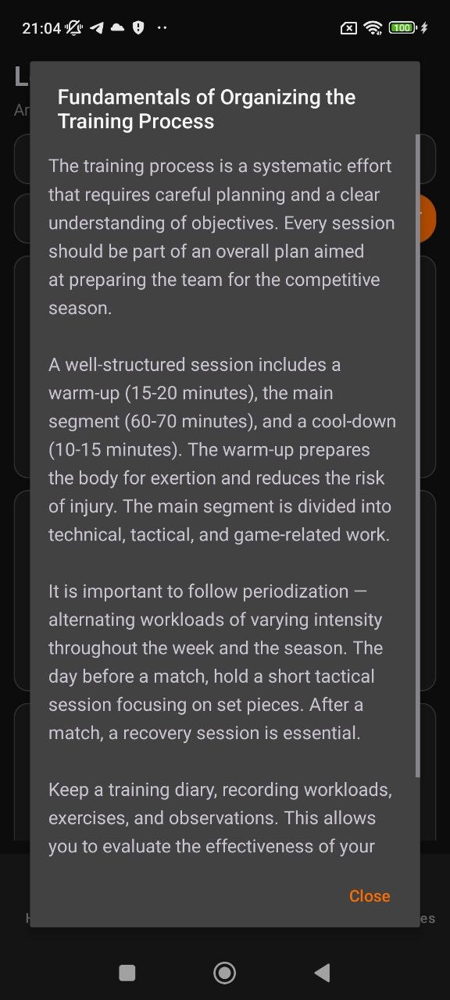
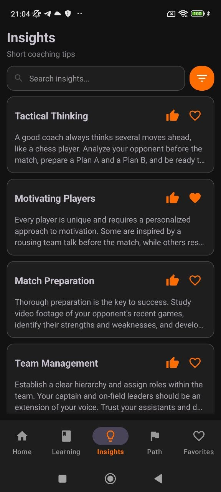
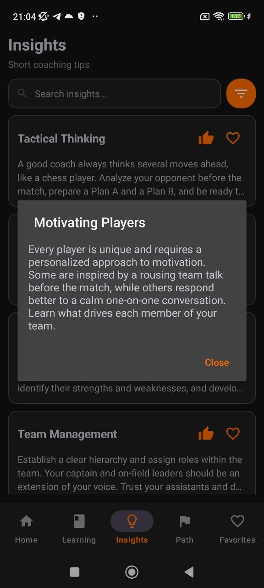
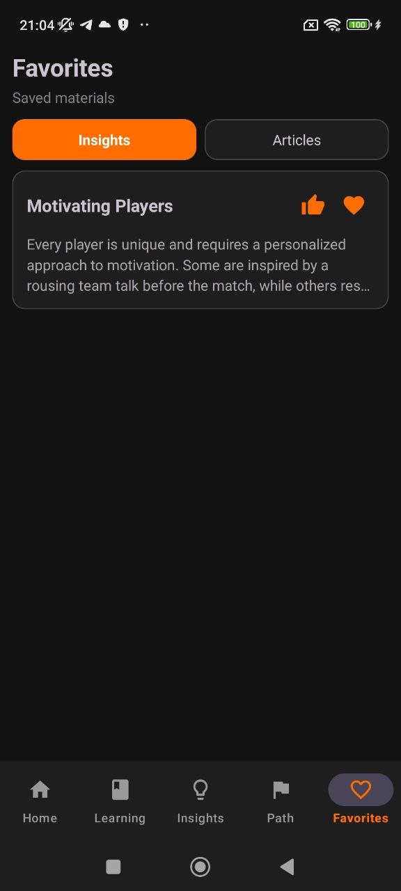
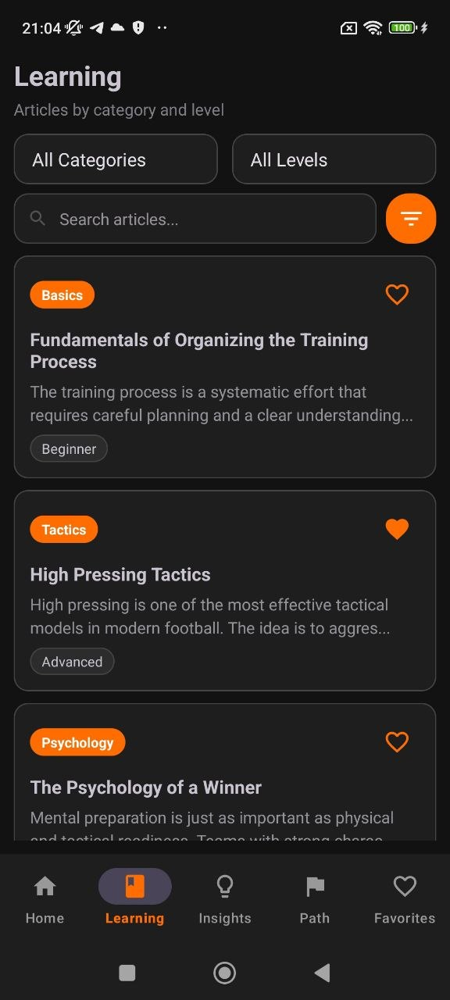

Learning Library
Read structured football articles by category and level, from beginner fundamentals to advanced tactical topics.
Learn tactics, training structure, leadership, match preparation and long-term coaching development in one clean mobile experience.



Read structured football articles by category and level, from beginner fundamentals to advanced tactical topics.
Save short coaching tips about motivation, tactical thinking, team structure, and match-day preparation.
Follow a step-by-step road map that helps users understand the profession and track development progress.
Keep important insights and articles in one place for quick access before training sessions or match preparation.
The learning area helps coaches filter content by topic and coaching experience. It is designed for practical use: open an article, read the full material, and save what matters.
Quick access to Learning, Insights and Coach Path from a clean dark home screen.
Fast coaching tips for everyday decisions, communication and match preparation.

A guided roadmap for professional growth with visible completion progress.

Saved materials stay accessible in one place when you need them again.
Modern football decisions are stronger when supported by analytics. The app makes educational content around xG, possession, heat maps and tactical evaluation easy to revisit.

From understanding football basics to building drill libraries and working with youth teams, the path section gives users a clear sense of progression.
Build core football understanding and coaching logic.
Understand sessions, roles, rhythm and match plans.
Work on communication, motivation and organization.
“A very clean app for reading coaching materials without extra clutter. Easy to save the most useful insights.”
Roman, youth coach“The coach path section is actually useful. It gives structure instead of random tips.”
Artem, beginner coach“Dark UI looks modern and the content is easy to return to before sessions.”
Danylo, academy assistantOpen the app, explore articles, save insights, and build your own coaching development flow.
Download on Google Play